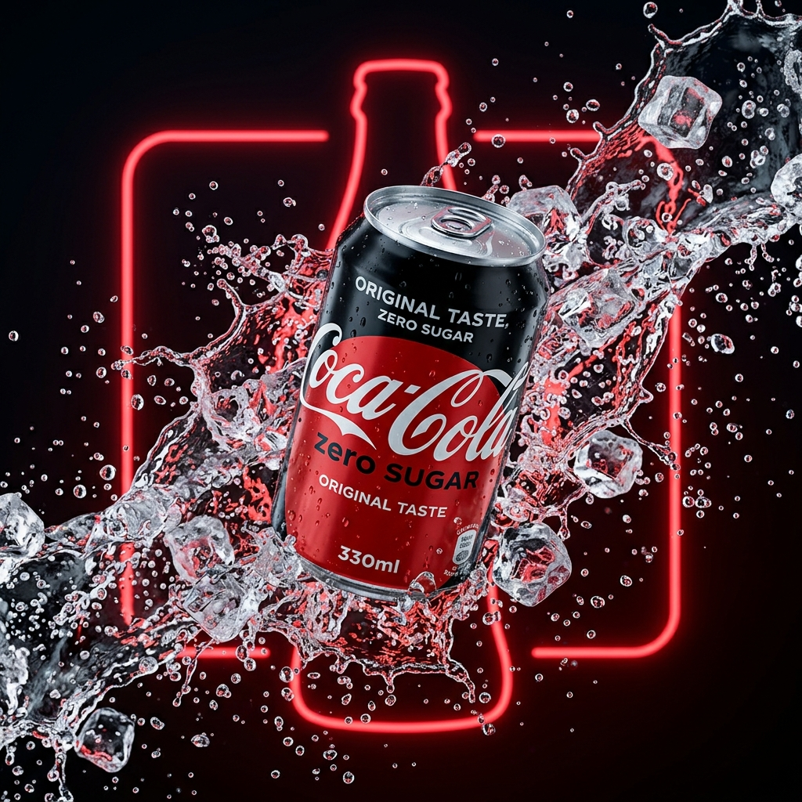
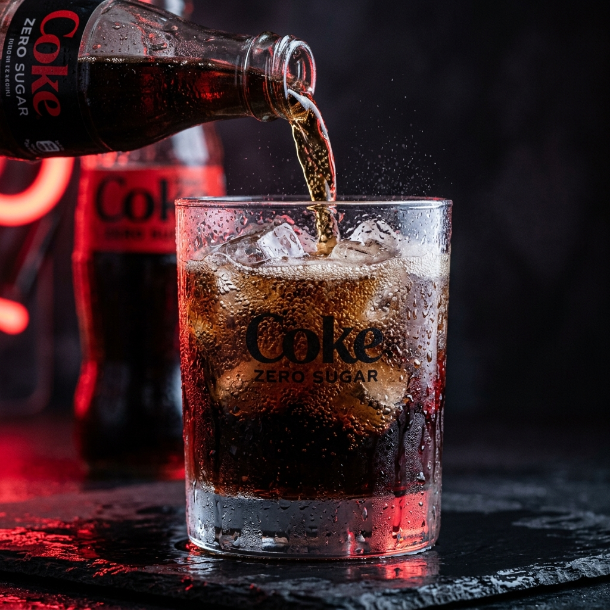

ZERO SUGAR.
ZERO LIMITS.
The legendary taste of original Coca-Cola, stripped down to its absolute zero essence. No compromises. Just pure, chilling carbonation that hits differently.


THE TASTE PARADOX
Can zero sugar really taste like the original classic? Drag the interactive taste slider below to shift between the zero state and the original taste index. Feel the balance.
BUILT FOR REFRESHMENT
Absolute Zero Sugar
Zero compromises on wellness, zero compromise on lifestyle. Zero calories, zero carbs, and 100% satisfying refreshment.
3°C Optimum Serve
Engineered to release peak carbonation profiles and optimal taste complexity when chilled to precisely three degrees Celsius.
Natural Aromas
Infused with the signature combination of plant extracts, aromatic oils, and fine spices that define the legendary secret recipe.
THE SOUND OF ZERO
Tap the node below to trigger the physical sensation of opening a Coke Zero. Built with real-time browser audio synthesis, mimicking the release of high-pressure CO₂ and the crack of aluminum.